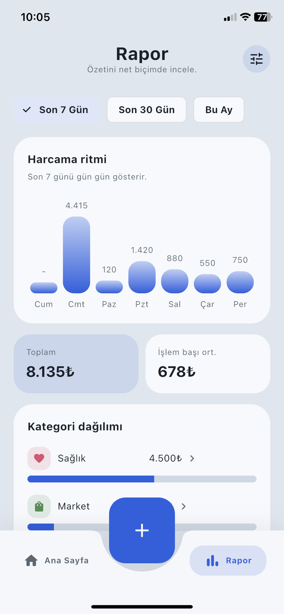
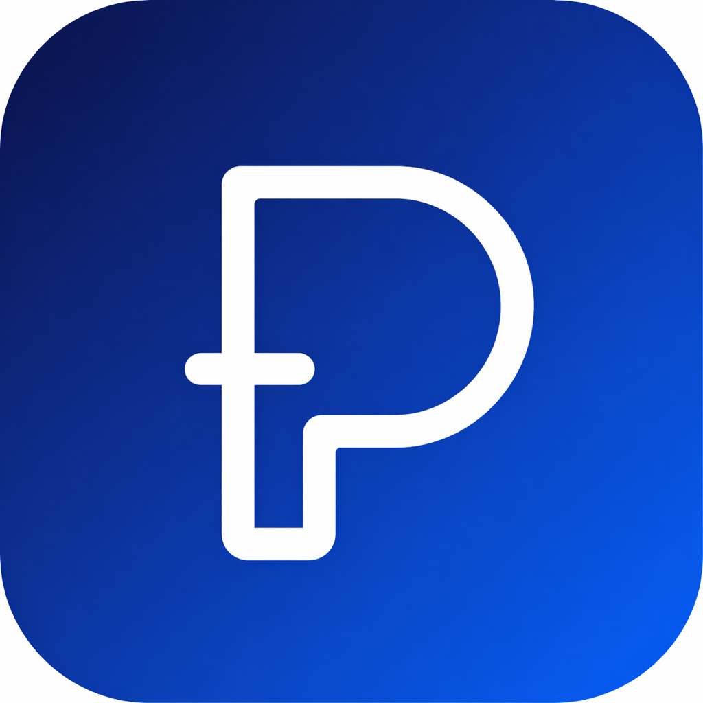
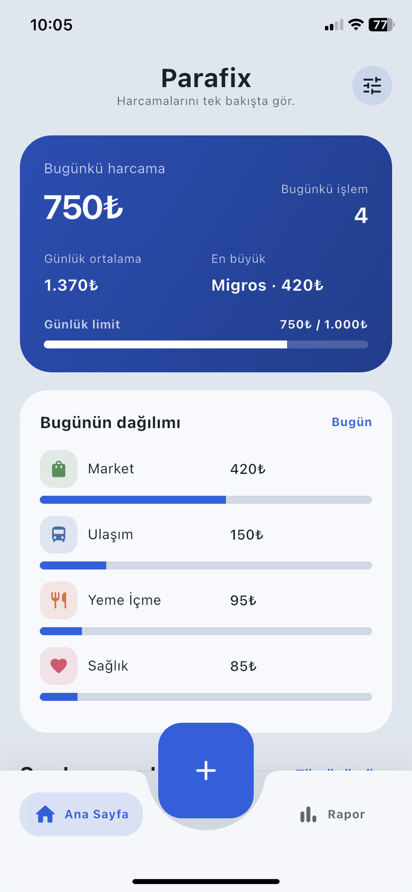
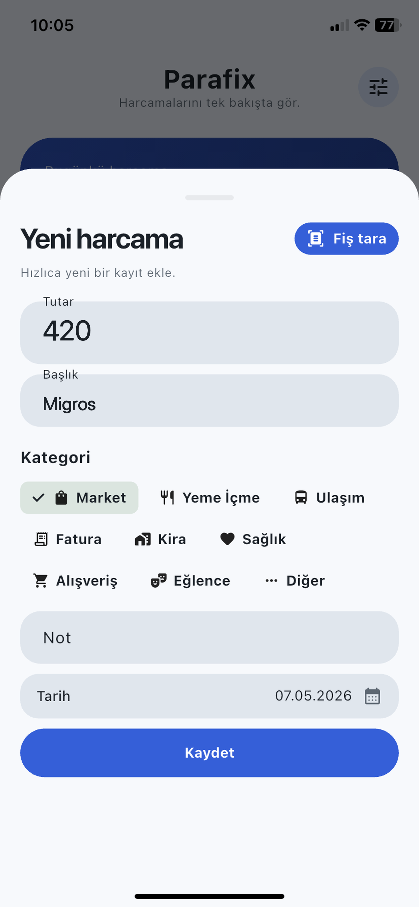
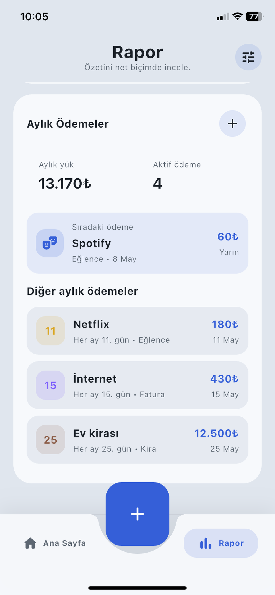

Sayılar değil,
anlamlı bir resim.
Son 7 gün, son 30 gün veya bu ay.
Harcamalarının ritmini ve dağılımını gör.


Parafix iPhone’una indirDAHA AZ UĞRAŞ. DAHA NET BİR ÖZET.
Bir kahve, market alışverişi, aylık ödemeler.
Hayatın küçük büyük harcamaları, tek bir yerde.
Hesap açmadan başla. Verilerin cihazında kalsın.
Bir finans paneli değil.
Günlük hayatının sade bir parçası.

Hızlıca kaydet
Tek bakışta gör
Kendine göre düzenle
KARMAŞAYA YER YOK
Her harcamayı hatırlamak zorunda değilsin.
Parafix, sana anlamlı bir özet sunmak için burada.
Fotoğraf çek veya galerinden bir fiş seç. Tutar, başlık, tarih ve kategori önerisi harcama ekranına gelsin.
Son bir kontrol, sonra kaydet.
Fişin cihazında işlenir.

Son 7 gün, son 30 gün veya bu ay.
Harcamalarının ritmini ve dağılımını gör.

Aylık ödemelerini bir arada takip et.
Hatırlatmalarla ödeme gününü kaçırma.

BİRAZ DA SENİN GİBİ
Altı tema, sana özel kategoriler ve günlük harcama limiti. Nasıl rahat ediyorsan, öyle kullan.
Grafit / renk önizlemesi
KİŞİSEL DEMEK, GERÇEKTEN KİŞİSEL.
Hesap açmana gerek yok. Harcama kayıtların cihazında saklanır,
fişlerin cihazında işlenir. Verilerini CSV olarak dışa aktarabilirsin.
AKLINDA KALMASIN
Hayır. Parafix banka bağlantısı kullanmaz. Harcamalarını kendin ekleyebilir veya fiş fotoğrafından bilgileri doldurabilirsin.
Fişin okunabilirliğine göre sonuç değişebilir. Parafix bilgileri öneri olarak doldurur; kaydetmeden önce kontrol edip değiştirebilirsin.
İzin verirsen aylık ödeme günlerini ve günlük harcama limitini hatırlatmak için kullanılır. Tercihlerini uygulamanın kişiselleştirme menüsünden düzenleyebilirsin.
Şu an mağazadaki sürüm iPhone için. Android sürümü henüz Google Play’de yayınlanmadı.
KÜÇÜK BİR ALIŞKANLIK, DAHA NET BİR GÜN.
Harcamalarını takip etmek, bir iş daha olmasın.